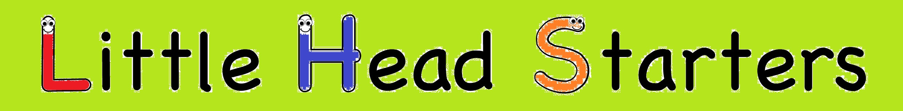

Children readily absorb information in the early years of their lives.
Little Head Starters is a parent/child interactive program for 2-6 year olds focussing on:
Little Head Starters is a structured, fun, weekly program providing the opportunity for young children to be exposed to literacy and numeracy skills before they attend school.
The program also helps to develop your child's confidence with opportunities to speak in front of a small group, such as show & tell, and become a 'leader'. There are also many activities to help improve fine motor and gross motor skills.
All songs, games and activities are specifically designed to maximise learning.
Parent participation ensures that every child receives one-on-one attention whilst attending the session and can take home ideas and skills to continue learning at home. It is extremely rewarding to be actively involved in your child's development.
FIRST SESSION FREE!
Commencing May 2014
Limited places available. Book early to avoid disappointment.
Location: Glen Waverley/ Wheelers Hill
Contact: 0449 112 636 for further details.